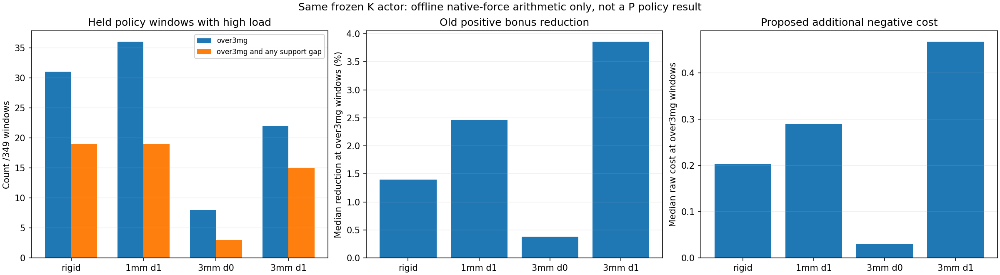

The current K actor has31 over3mg policy windows in the rigid PhysX turn,19 also containing a support interruption. The existing impact factor only multiplies the positive support bonus. Its median reduction at those31 windows is1.40%; it produces no independent cost when the positive bonus is zero. These observations motivate an experiment, not a predicted improvement.

| Model | Over3mg windows | Also gap | Full-recording peak (N) | Peak time (s) | Controlled/core peak (N) |
|---|---|---|---|---|---|
| rigid | 31 | 19 | 1855.51 | 2.1275 | 1855.51 |
| compliant_1mm_d1 | 36 | 19 | 1719 | 2.165 | 1719 |
| compliant_3mm_d0 | 8 | 3 | 9719.3 | 0 | 1217.51 |
| compliant_3mm_d1 | 22 | 15 | 2246.01 | 2.345 | 2246.01 |
The zero-damping9719 N peak is the t=0 initial readout before the first applied policy action, not a turn impact. Its controlled/core peak is1217.51 N. Reward windows use2792 applied physical samples grouped into349 held actions; the initial readout is excluded.
P preserves the entire K reward and adds a bounded ungated cost with the existing3mg threshold, coefficient1 and unchanged external+0.4 weight:
excess=max(Fz/(3mg)-1,0) cost=1-exp(-max_over8_substeps_and2_wheels(excess**2)) raw_P=raw_K-cost
It does not impose absolute height, bilateral support, zero sideslip, force slew, a new velocity target, or action filtering. The other14 rewards, beta+2/std0.12,400Hz physics/50Hz policy, original DR, initial network and from-scratch budget remain fixed. A complete Isaac smoke is required before full training and nominal dual-engine validation.
Tracking, speed and beta qualities are set to1 only to isolate force arithmetic in this report. The actual training rewards were not recorded or reconstructed here. There is no causal claim that shock removal will restore support. The saved poses/actions/physical models remain unchanged.
Metrics and source hashes · All native force windows and isolated costs · Completed contact-model transfer study
python -B scripts/diagnose_ground_contact_peak_impact.py --collection results/physx_normal_compliance_20261025_v1/evidence --output-dir /tmp/peak-impact-diagnostic python -B scripts/report_ground_contact_peak_impact.py --result /tmp/peak-impact-diagnostic
No trained P outcome or overall task completion is claimed by this diagnostic.